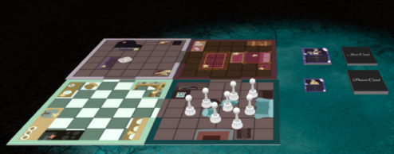

Haunted


Haunted is a multiplayer board game where players work together to prepare the Poulter family home before a major open house while dealing with the ghost of Great Aunt Patricia. Clean up her ghost’s mess alongside the rest of the Poulter family while keeping a close eye on your fellow players — Aunt Patricia could possess anyone at any moment, including you!
• Team Project
• Role: Project Manager & Game Designer
• Built in Tabletopia
• 4 Week Development

We as a team decided on what kind of game we wanted to design along with the roles for the project. As a project manager and game designer, I organized and documented initial game ideas and feature concepts throughout the planning process. Early discussions focused on what we wanted to create and how to accomplish our team goals, along with the type of experience we wanted to create for players. In the end, we decided that our goals centered around developing a replayable room exploration game inspired by classic horror settings.
I also made sure that each team member was assigned a role that suited their strengths and interests rather than placing them in positions they did not want to work in. Throughout development, I regularly checked in with team members each week to discuss their progress and contributions.

The theme of Haunted was designed around classic horror settings with a mix of suspense. Haunted environments, paranormal events, and hidden possession mechanics were used to create tension and paranoia between players while maintaining a stylized horror atmosphere throughout gameplay.

Boss encounters appear periodically as players progress through the level. During these encounters, the boss launches projectiles while the player must continue navigating obstacles within the arena. Each time the boss appears, its total health increases based on the player's progress, gradually raising the difficulty and testing the player's control and timing.
©2024 by Shion Lovelace.
All content, logos, and trademarks are the property of their respective owners.